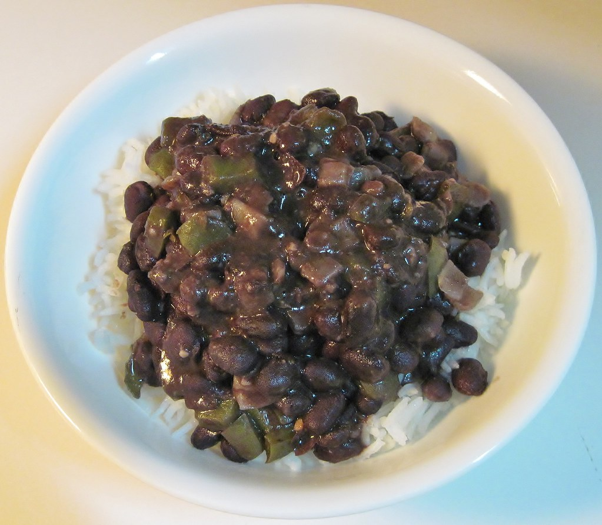

Beans and Rice
Beans and Rice
Home

Description
This dish is cheap, easy to prepare, delicious and nutritous. It's really the whole package, and is a perfect struggle meal. It also reheats
amazingly, meaning it's great for meal prep. It can be served as a side or main. My personal favorite way to eat it is as a main dish topped
with a fried egg and doused in hot sauce.
Ingredients
- black beans - 2 15oz Cans
- long grain white rice - 2 cups
- green bell pepper - 1, large - diced
- white onion - 1, large - diced
- fresh garlic - 4-6 cloves - minced
- thick cut bacon - 4-6 slices
- chicken broth - 4 cups
- ground pepper - to taste
- ground cumin - to taste
- oregano (leaves or ground) - to taste
- salt - to taste
- Start by frying your bacon in a large pot. Fry as much bacon as will fit in a single layer in the bottom of the pot.
- Remove the bacon and set aside to drain. Add the pepper and onion to the pot and sautee until softened. Add the garlic in
in the last minute or so of your sautee as to not burn it.
- Add in the chicken broth, rice, black beans (with liquid from the can), and spices. Spices are to your discretion, although I
reccomend going heavy on everything except the salt, which you should use sparingly.
- Reduce the heat to a simmer, cover and cook for 30 minutes. After 30 minutes, stir, making sure to scrape the bottom of the pot.
Cover and repeat every 10 minutes until almost all of the liquid is absorbed and the rice is cooked.
-
Chop the bacon and stir it in. Serve warm with your desired toppings.